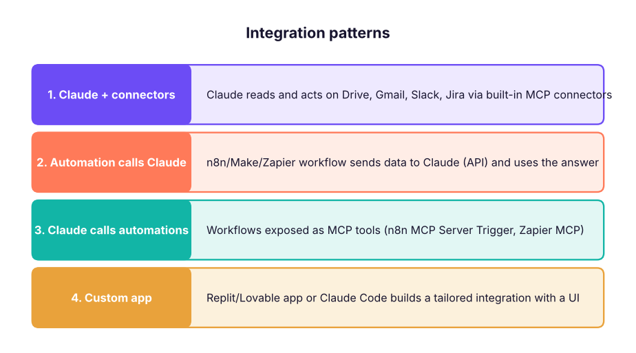

Connect All Your Apps with Claude, n8n, Make, Zapier and Replit
Design integrations across your tools with Claude as the brain and n8n, Make, Zapier or Replit as the hands. Learn the four integration patterns, how to pick a platform, how Claude helps you design and debug automations, and build three end-to-end projects - a lead pipeline, a feedback-to-roadmap loop and a weekly executive report - with costs, reliability and security in mind.
- Choose the right integration pattern and platform for a business need
- Use Claude to design, generate and debug automations
- Connect Claude to n8n, Make and Zapier through the API, MCP and webhooks
- Build three end-to-end automations used by PMs and BAs
- Estimate cost, plan error handling and document the integration
Four ways to connect apps with AI

| Pattern | Best for | Example |
|---|---|---|
| Claude + connectors | One person, ad-hoc questions and actions | "Draft replies to customer emails using our refund policy" |
| Automation calls Claude | Scheduled or event-driven, many records | Classify every support ticket as it arrives |
| Claude calls automations | Conversational control of business systems | "Add this lead to the CRM and book a demo" |
| Custom app | A team tool with its own UI and data | Internal "contract review" portal |
Choosing the platform
| Need | Pick |
|---|---|
| Fast, simple, many SaaS apps, non-technical team | Zapier |
| Visual branching, data mapping, good price per operation | Make |
| Self-hosting, code steps, AI agents, high volume | n8n |
| A full app with UI, database and logic | Replit (or Lovable, Bolt) |
| Engineering-owned integration in your codebase | Claude Code |
Claude as your integration designer
Ask Claude to do the hard thinking before you click:
I need an automation: when a Typeform demo request arrives, enrich the company from Clearbit-like data,
score the lead (company size, role, budget), add to HubSpot, alert #sales in Slack for scores above 70,
and email a booking link. Platform: n8n Cloud.
1) Draw the flow as a list of nodes with what each does.
2) Give the field mapping table.
3) List failure cases and how to handle each.
4) Give me the n8n Code node for the scoring logic.Claude can also read an API reference page and produce the HTTP Request settings, explain an error from an execution log, or write a Make formula. In n8n the AI Assistant and in Zapier/Make the built-in AI builders do similar work inside the tool.
Calling Claude from an automation
| Platform | How |
|---|---|
| n8n | Anthropic Chat Model node inside an AI Agent/LLM Chain, or HTTP Request to the Messages API |
| Make | Anthropic Claude module ("Create a prompt" / "Make an API call") |
| Zapier | Anthropic (Claude) app action, or AI by Zapier |
| Replit | Replit Agent adds the Anthropic SDK and stores the key as a Secret |
# The JSON body every platform sends to Claude's Messages API (shown here, not sent)
import json
body = {"model": "claude-sonnet-5-5", "max_tokens": 300,
"system": "Classify support tickets. Reply with JSON only: {\"category\": one of [billing, bug, how-to, feedback], \"urgency\": 1-5}",
"messages": [{"role": "user", "content": "I was charged twice for my Pro plan this month!"}]}
print(json.dumps(body, indent=1))
expected = {"category": "billing", "urgency": 4}
print("expected model output:", expected){
"model": "claude-sonnet-5-5",
"max_tokens": 300,
"system": "Classify support tickets. Reply with JSON only: {\"category\": one of [billing, bug, how-to, feedback], \"urgency\": 1-5}",
"messages": [
{
"role": "user",
"content": "I was charged twice for my Pro plan this month!"
}
]
}
expected model output: {'category': 'billing', 'urgency': 4}Ask for JSON-only output with a fixed schema so the next node can map the fields reliably.
Project 1: Lead pipeline (Zapier or Make)
Website form → Claude: score and summarise the lead → HubSpot: create/update contact → Filter: score ≥ 70 → Slack #sales + Gmail: send Calendly link.
Project 2: Feedback-to-roadmap loop (n8n)
Schedule (daily) → Intercom/Zendesk + App Store reviews (HTTP) → Claude: tag theme, sentiment, feature request → Google Sheets: feedback log → Weekly: Summarize by theme → Claude: write the top-5 insights with quotes → Notion page + Slack #product.
Project 3: Weekly executive report (Claude + MCP)
Expose an n8n workflow "get_weekly_metrics" (pulls KPIs from your warehouse or Sheets) through MCP Server Trigger. In Claude, connect it together with Jira and Drive and ask every Monday: "Prepare the weekly product report: KPIs vs target, shipped items from Jira, risks from the roadmap doc, in our report template." Schedule it with a recurring task where available.
Cost, reliability and security
runs_per_day, steps, days = 400, 5, 30
zapier_tasks = runs_per_day * steps * days # Zapier counts each action step as a task
make_ops = runs_per_day * (steps + 1) * days # Make counts each module run (incl. trigger)
n8n_executions = runs_per_day * days # n8n Cloud counts workflow executions
claude_tokens = runs_per_day * days * (600 + 200) # input + output tokens per run
print(f"Zapier ≈ {zapier_tasks:,} tasks | Make ≈ {make_ops:,} operations | n8n ≈ {n8n_executions:,} executions | Claude ≈ {claude_tokens / 1e6:.1f}M tokens / month")Zapier ≈ 60,000 tasks | Make ≈ 72,000 operations | n8n ≈ 12,000 executions | Claude ≈ 9.6M tokens / month
Compare these with each platform's current plan limits before you choose; volume changes the answer.
| Area | Checklist |
|---|---|
| Reliability | Retries with back-off, error branch/workflow with alerts, idempotent writes (search before create), logging |
| Security | Credentials store only, least-privilege scopes, no secrets in prompts, PII masking, vendor DPAs |
| Quality | JSON schemas for AI output, validation step, human review for customer-facing text |
| Documentation | Owner, purpose, trigger, systems, data mapping, failure handling, cost (one page per automation) |
Summary
- Four patterns: Claude + connectors, automations calling Claude, Claude calling automations via MCP, and custom apps.
- Zapier for speed, Make for visual logic, n8n for control and agents, Replit for full apps, Claude Code for engineering-owned builds.
- Use Claude to design flows, mappings, failure cases and code steps; ask for JSON output.
- Plan cost by your platform's billing unit, and build in retries, alerts and least privilege.
1. You need Claude to classify 5,000 tickets a day as they arrive. Which pattern?
2. Which platform suits a team that must self-host for data privacy and wants code steps?
3. Why ask Claude for JSON-only output in an automation?
4. What does Zapier count for billing?
5. How can Claude trigger an n8n workflow conversationally?
6. What prevents duplicate CRM records when a workflow retries?
Build Project 2 on your favourite platform with 20 sample reviews in a Google Sheet. Have Claude tag each review (theme, sentiment, feature request) as JSON, aggregate weekly, and post the top 5 insights with quotes to Slack. Document it on one page.
Show solution
Flow: Schedule → Sheets (read new rows) → Loop → Claude (system prompt with schema) → Parse JSON → Sheets (write tags) → weekly Summarize by theme → Claude (insights) → Slack. Include an error workflow and a validation step that rejects non-JSON answers.
Q: How would you decide between Zapier, Make and n8n for a client? By team skills, volume and cost model, need for self-hosting and code, complexity of branching, required apps, and governance. Prototype the riskiest step on the shortlisted tool.
Q: How do you make AI steps in automations reliable? Structured JSON output with a schema, validation and retries, deterministic settings, small focused prompts, fallbacks, human review for high-impact outputs, and monitoring of error rates.
Q: What goes into an integration's documentation? Owner, purpose, trigger, systems and endpoints, data mapping, error handling and alerts, credentials and scopes, cost, and a test checklist.
Q: How can Claude help a BA who does not code? It turns requirements into flows and mappings, writes formulas and small code steps, explains API docs and error logs, and generates test data and acceptance criteria.
Q: What risks come with letting AI act in business systems? Wrong or duplicate actions, data leakage, prompt injection, cost overruns and unclear accountability; mitigate with scopes, approvals, validation, logs and budgets.
Learn more
Practise more online
Free, trusted places to test yourself on this topic. Links open the original site in a new tab.